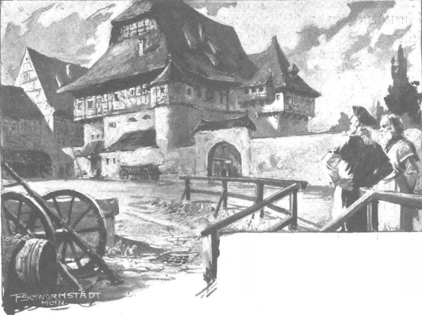

Họ nghỉ ở thành Plock một thời gian để giải quyết thủ tục tài sản và di chúc của cha tu viện trưởng, sau khi nhận được các giấy tờ cần thiết, họ lại đi tiếp, ít cần nghỉ lại dọc đường, vì đường đi rất dễ và an toàn, do cái nắng nóng đã làm bùn khô đi, sông suối hẹp lại và con đường chạy qua một vùng đất yên bình, nơi có những cư dân thân thiện và mến khách sinh sống. Tuy nhiên, vốn thận trọng, ngay từ Sieradz, ông Maćko đã phái một gia nhân về Zgorzelice báo trước việc ông và Jagienka sẽ đến, nên cậu Jaśko, em trai của Jagienka, dẫn theo hai mươi gia nhân có vũ trang đi đón họ giữa đường và đưa về nhà.
Cuộc gặp mặt thật vui, với bao lời chào hỏi và những câu cảm thán. Giống Jagienka như hai giọt nước, nhưng Jaśko đã cao hơn cô, trở thành một chàng trai nhanh nhẹn, vui vẻ giống hệt ông Zych đã quá cố, lại thừa hưởng được cái tính muốn ca hát suốt ngày và linh hoạt như một tia lửa. Mấy năm qua, thấy mình đã lớn lên, mạnh mẽ, cậu tự coi mình là một người trưởng thành, chỉ huy đám gia nhân như một thủ lĩnh thật sự, còn họ thi hành mọi mệnh lệnh của cậu trong nháy mắt, rất sợ sự nghiêm khắc và quyền uy của cậu.
Ông Maćko và Jagienka ngạc nhiên khôn xiết, còn cậu cũng kinh ngạc và vui sướng về sắc đẹp và vẻ lịch lãm của chị gái đã lâu không gặp. Cậu nói rằng đã định đi tìm chị, suýt nữa họ không gặp cậu ở nhà, vì cậu đang cần phải thăm thú thế gian, gặp gỡ mọi người, luyện tập võ nghệ hiệp sĩ và tìm cơ hội để thách đấu với các hiệp sĩ lang thang.
- Hiểu biết thế giới và phong tục của thế gian là việc tốt, - ông Maćko nói với cậu, - vì nó dạy ta cách hành xử trong mỗi cuộc phiêu lưu, biết nói những điều cần nói và tăng cường trí tuệ bẩm sinh. Còn chuyện thách đấu, bác nghĩ là cháu vẫn còn quá trẻ, nếu nói điều đó với người lạ thì sẽ bị người ta cười cho đấy.
- Thế thì hắn sẽ phải khóc sau khi cười, - Jaśko nói, - nếu không phải hắn, thì vợ con hắn sẽ phải khóc.
Và ánh mắt cậu gườm gườm đầy đe dọa, như thể muốn nói với tất cả các hiệp sĩ lang thang trên đời: “Chuẩn bị nộp mạng đi!”
Vị hiệp sĩ trang Bogdaniec hỏi:
- Thế bọn Cztan và Wilk có chịu để yên không? Ngày trước chúng nó nhìn Jagienka ham hố lắm.
- À! Wilk thì bị giết ở Śląsk rồi. Anh ta muốn hạ một tòa thành Đức tại đó và đã công thành, nhưng bị một súc gỗ từ thành nện trúng, hai ngày sau, anh ta đã tắt thở.
- Thật đáng tiếc. Cha hắn cũng đã từng đánh bọn Đức ở Śląsk, nơi bọn chúng xâm chiếm, cướp bóc dân ta, ông ấy cướp lại của chúng… Công thành thì khó lắm, vì khi ấy cả giáp phục lẫn võ nghệ hiệp sĩ đều chẳng giúp được gì. Cầu Chúa cho đại quận công Witold không đánh thành, mà chỉ đánh bọn Thánh chiến ngoài đồng… Thế còn Cztan? Có chuyện gì với hắn vậy?
Jaśko bật cười:
- Cztan đã kết hôn! Anh ta cưới con gái của một phú nông xứ Bờ Cao, nổi tiếng là xinh đẹp. Hey! Không chỉ là xinh đâu, cô ta còn rất ghê gớm, bởi chẳng chịu nhường Cztan chút nào, một, hai là quại ngay vào mõm, dẫu anh ta râu ria đến mấy, rồi dắt mũi đi như dắt gấu bằng xích sắt ấy.
Nghe thế, lão hiệp sĩ khoái chí vô cùng.
- Thấy chưa! Đàn bà đều thế! Jagienka, rồi cháu cũng sẽ thế! Tạ ơn Chúa, thế là hết rắc rối với hai gã kẻ cướp này, vì nói thật tình, bác cũng thấy lạ sao chúng nó không quậy phá Bogdaniec.
- Cztan muốn, nhưng Wilk không cho vì khôn ngoan hơn. Anh ta đến Zgorzelice gặp chúng cháu hỏi dò chuyện gì đã xảy ra với chị Jagienka. Cháu nói chị ấy đi nhận di sản của cha tu viện trưởng. Anh ta hỏi: “Sao ông Maćko không nói với tao chuyện đó?” Cháu bèn bảo: “Jagienka có phải là của anh đâu mà bác ấy phải nói?” Anh ta ngẫm nghĩ một lúc, rồi nói: “Đúng thật, cô ấy không phải của tao.” Vốn thông minh, anh ta hiểu ngay rằng bác với chúng cháu như một nhà, nên mới bảo vệ cho Bogdaniec trước Cztan. Bọn họ hay choảng nhau ở Lawica gần Piaski, rồi lại chè chén với nhau như thường.
- Cầu Chúa chiếu rọi linh hồn gã Wilk! - Ông Maćko thốt lên.
Và trút một hơi thở thật dài, ông mừng vì hẳn Bogdaniec không bị hư hại gì, ngoại trừ do ông vắng mặt quá lâu.
Quả thực, ông cũng không thấy gì khác, ngược lại, đàn vật nuôi gia tăng, từ một đàn ngựa cái không lớn lắm đã có những chú ngựa non hai tuổi, một số là dòng giống ngựa chiến Fryzja to khỏe khác thường. Chỉ tiếc là có mấy tù binh bỏ trốn, nhưng ít thôi, vì họ chỉ có thể trốn đến Śląsk, mà ở đó những tên hiệp sĩ kẻ cướp người Đức hoặc người lai Đức đối xử với tù nhân tàn tệ hơn giới quý tộc Ba Lan. Tuy nhiên, ngôi nhà lớn cũ kĩ đã bị nghiêng đáng kể, sắp sập. Sàn đất đã nứt nẻ, các bức tường và trần nhà bị cong võng, các rầm gỗ thông làm từ hơn hai trăm năm trước đã bắt đầu bị mục. Trong những cơn mưa mùa hè sầm sập, tất cả các phòng mà xưa kia dòng họ Mưa Đá đông đúc của trang Bogdaniec từng cư ngụ, đều bị dột. Mái nhà chi chít lỗ thủng, phủ đầy những đám rêu xanh đỏ. Cả ngôi nhà như một cái nấm to rộng đã lún xuống, rạn nứt.

Ông Maćko mừng vì Bogdaniec không bị hư hại gì, ngoại trừ do ông vắng mặt quá lâu
- Nếu được tu bổ, nó còn vững được, vì mới bắt đầu bị hư hỏng chưa lâu. - Ông Maćko nói với viên quản nô Kondrat, người trông coi tài sản khi vắng chủ.
Rồi lát sau, ông nói thêm:
- Ta thì sống trong nhà này đến khi chết cũng được, nhưng Zbyszko thì phải có một tòa thành nhỏ.
- Chúa tôi! Tòa thành nhỏ?
- Hey! Chứ sao?
Tòa thành là mơ ước yêu thích mà ông xây nên cho Zbyszko và con cháu tương lai của chàng. Ông biết rằng quý tộc không ở trong một tòa nhà bình thường, mà phải ở phía sau hào sâu và tường cao có cắm cọc nhọn, với các vọng lâu canh gác, từ đó lính canh quan sát cả vùng, để dễ xử trí những kẻ lân la đáng ngờ. Không đòi hỏi gì nhiều cho bản thân mình, nhưng đối với Zbyszko và con cháu của chàng, ông Maćko không muốn dừng lại ở điều vặt vãnh, nhất là khi tài sản bây giờ đã tăng lên rất nhiều.
“Nếu nó lấy được Jagienka,” ông nghĩ, “cùng với con bé là cả điền trang Moczydoly và di sản của cha tu viện trưởng, thì không một kẻ nào trong vùng sánh bằng - xin Chúa hãy ban cho!”
Nhưng mọi thứ đều phụ thuộc vào việc Zbyszko có trở về hay không, mà đó là chuyện không chắc chắn, tùy thuộc ân sủng bề trên. Ông Maćko tự nhủ giờ đây phải cung kính Chúa tốt nhất có thể, sao cho không những không mắc tội phạm thánh, mà còn được lòng Chúa. Với mong muốn ấy, ông không tiếc gì với nhà thờ ở Krzesnia, cả về đèn nến, bột rắc trong lễ thánh, lẫn muông thú để phóng sinh, và một buổi tối ông đã nói với Jagienka khi đến thăm Zgorzelice:
- Ngày mai bác sẽ đi Kraków viếng mộ hoàng hậu Jadwiga linh thiêng của chúng ta.
Cô suýt bật lên khỏi ghế vì sợ.
- Bác nhận tin không lành à?
- Không có tin dữ, mà cũng chẳng thể có. Nhưng cháu còn nhớ không, lúc bác bị cái mũi nhọn cắm vào sườn, hồi cháu cùng Zbyszko đi săn hải ly ấy, bác thề rằng nếu Chúa cho khỏe lại, bác sẽ đến viếng mộ bà. Hồi đó mọi người đều tán thành ý muốn ấy. Chứ sao! Ở nơi cao xanh kia, Đức Chúa chắc có nhiều người hầu cận thánh thiện, nhưng chẳng ai sánh bằng hoàng hậu của chúng ta, và bác không muốn bà giận, nhất là khi bác đang lo cho Zbyszko.
- Phải lắm! Bác làm ngay đi! - Jagienka thốt lên. - Nhưng bác vừa mới từ một chuyến phiêu lưu kinh khủng như vậy trở về…
- Thì sao! Bác muốn làm xong ngay mọi việc, để sau đó bình tâm ngồi nhà chờ Zbyszko về. Mong sao hoàng hậu thánh thiện của chúng ta cầu xin cho nó với Chúa Giêsu, để giúp nó địch nổi cả mười thằng Đức với bộ áo giáp tốt.. Sau đó, bác sẽ yên lòng hơn xây dựng tòa thành nhỏ cho nó.
- Xương cốt bác vẫn còn chắc lắm!
- Thì bác vẫn còn khỏe mà. Bác muốn nói với cháu chuyện khác. Hãy để Jaśko đi cùng bác, nó cũng đang muốn lên đường. Bác là người từng trải, có thể kiểm soát nó. Nếu có chuyện gì xảy ra bởi thằng bé ngứa ngáy chân tay, thì cháu biết là chuyện đánh nhau không phải chuyện mới với bác, dù trên bộ hay trên ngựa, bằng kiếm hay bằng rìu..
- Cháu biết! Không ai bảo vệ nó tốt hơn bác.
- Bác nghĩ là sẽ không đánh nhau đâu, thời hoàng hậu còn sống, đầy hiệp sĩ ngoại quốc ở Kraków để chiêm ngưỡng dung nhan của bà, nhưng giờ bọn họ thích kéo nhau đến thành Malborg hơn, bởi ở đó ê hề rượu vang ngọt xứ Ý.
- Nhưng lại có hoàng hậu mới [247] mà bác.
Ông Maćko nhăn mặt và xua tay:
- Bác đã gặp rồi! Bác sẽ không nói gì thêm - cháu hiểu mà.
Lát sau, ông nói thêm:
- Ba hoặc bốn tuần nữa bác sẽ trở lại.
Mọi chuyện diễn ra như thế. Vị hiệp sĩ lớn tuổi chỉ bắt Jaśko phải thề trên danh dự hiệp sĩ và Thánh Jerzy rằng cậu sẽ không đòi thêm chuyến đi nào nữa - rồi họ lên đường.
Họ đến được thành Kraków mà không xảy ra chuyện gì, vì đất nước đã tạm yên ổn, được bảo vệ khỏi các lãnh chúa thân Đức vùng biên ải và bọn hiệp sĩ cướp đường Đức tấn công, bởi chúng ngại sức mạnh của vương quốc và sự dũng cảm của cư dân. Sau lễ cưới của đức vua, họ được hiệp sĩ Powała xứ Taczew và quận công trẻ Jamont đưa vào cung vua. Ông Maćko nghĩ rằng cả ở cung đình và trong các thư phòng, chắc người ta sẽ háo hức hỏi ông về quân Thánh chiến, như một người am tường về chúng và đã có dịp quan sát chúng rất kỹ. Nhưng sau khi nói chuyện với quan chưởng ấn và quan chưởng kiếm của thành Kraków, ông ngạc nhiên thấy rằng họ biết về bọn Thánh chiến không những không kém mà còn hơn cả ông. Người ta biết cả những chi tiết nhỏ nhất về những gì đang xảy ra ở thành Malborg lẫn những tòa thành khác, kể cả những nơi xa xôi nhất. Họ biết rõ các mệnh lệnh, số lượng binh sĩ là bao nhiêu, bao nhiêu vũ khí, cần bao nhiêu thời gian để tập hợp quân đội, ý định của các hiệp sĩ Thánh chiến trong trường hợp chiến tranh xảy ra. Họ biết rõ từng viên lãnh binh, biết hắn có tính bốc đồng hăng tiết hay thận trọng, và đã ghi chép cẩn thận tất cả mọi thứ như thể chiến tranh sẽ nổ ra ngay ngày mai.
Vị hiệp sĩ lớn tuổi vui trong dạ, vì ông hiểu rằng ở thành Kraków người ta đã chuẩn bị cho cuộc chiến thận trọng hơn, hiểu biết và kỹ lưỡng hơn nhiều so với ở thành Malborg. Ông thầm nghĩ: “Chúa Giêsu đã cho quân ta can trường bằng hoặc hơn quân Đức, nhưng thông minh hơn và nhìn xa hơn.” Ông cũng được biết nguồn tin từ đâu đến: từ chính cư dân các thành bang vùng đất Phổ, cả người Ba Lan lẫn người Đức. Giáo đoàn đã khiến họ thù hận, mọi cư dân vùng đất Phổ mong đợi quân đội vua Jagiełło như trông chờ sự cứu rỗi.
Ông Maćko nhớ lại những điều hiệp sĩ Zyndram xứ Maszkowice đã nói tại thành Malborg và thầm nhắc đi nhắc lại trong lòng: “Ông ấy có cái đầu thật ghê gớm! Đúng là một kho báu!” [248]
Ông nhớ lại từng lời của vị hiệp sĩ. Có lần, ông còn mượn sự khôn ngoan của ông ấy, khi Jaśko trẻ tuổi hỏi về quân Thánh chiến, ông nói:
- Chúng mạnh khỏe, to béo thật, nhưng cháu nghĩ sao? Liệu một hiệp sĩ khỏe nhất có bay khỏi yên ngựa không, nếu dây thắng yên và bàn đạp đã bị cắt đứt?
- Hắn sẽ bay chứ, đúng như cháu đang đứng đây này! - Anh bạn trẻ trả lời.
- Hà! Thấy chưa! - Ông Maćko reo lên. - Bác muốn cháu hiểu điều đó!
- Hiểu gì cơ ạ?
- Giáo đoàn chính là gã hiệp sĩ đó!
Và lát sau, ông nói thêm:
- Người tầm thường không thể nói cho cháu những lời đó đâu - đừng lo!
Và thấy chàng hiệp sĩ trẻ tuổi chưa hiểu, ông bắt đầu giải thích, nhưng quên nói thêm rằng không phải ông tự nghĩ ra được sự so sánh ấy, mà nó phát sinh từ bộ óc hùng mạnh của hiệp sĩ Zyndram xứ Maszkowice.